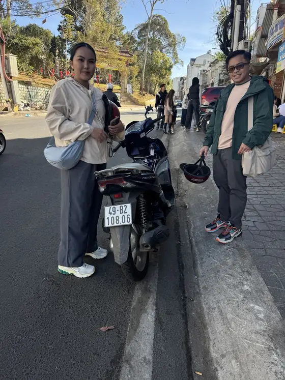

Dã quỳ ជាអ្វី ហើយរីកពេលណា
Dã quỳ (Tithonia diversifolia) ដែលតែងហៅថាផ្កាឈូករ័ត្នព្រៃ ឬផ្កាឈូករ័ត្នម៉ិកស៊ិក ជាគុម្ពោតខ្ពស់មានផ្កាពណ៌លឿងភ្លឺ ដុះឯងតាមផ្លូវ ជម្រាលភ្នំ និងគែមព្រៃ នៅទូទាំងតំបន់ខ្ពង់រាបកណ្តាលនៃវៀតណាម។ ជុំវិញដាឡាត់ វាជាធម្មតារីកពីចុងខែតុលា ដល់ខែធ្នូ ហើយរីកពេញបំផុតប្រហែលពាក់កណ្តាលខែវិច្ឆិកា។ ពេលវេលាប្រែប្រួលបន្តិចរៀងរាល់ឆ្នាំអាស្រ័យលើភ្លៀង ដូច្នេះគួរសួរអ្នកក្នុងស្រុកពីស្ថានភាពបច្ចុប្បន្ន — យើងរីករាយប្រាប់អ្នក។
ផ្ការីកនៅចុងរដូវវស្សា៖ ភ្លៀងតិចទៅៗ ពេលព្រឹកតែងស្រឡះ ហើយមេឃពណ៌ខៀវស្រស់ — ល្អឥតខ្ចោះសម្រាប់ថតរូបផ្កាលឿង ជាមួយភ្នំស្រល់បៃតង។
មើលផ្កាឈូករ័ត្នព្រៃជុំវិញដាឡាត់នៅឯណា
អ្នកមិនត្រូវការកសិដ្ឋានពិសេស ឬសំបុត្រទេ — dã quỳ ដុះតាមផ្លូវជាច្រើន នៅក្រៅទីក្រុងបន្តិច។ ទិសដៅងាយៗខ្លះ៖
- ឆ្ពោះទៅបឹង Tuyen Lam (ខាងត្បូង ប្រហែល 5–7 គ.ម) — គុម្ពោតតាមផ្លូវ កណ្តាលព្រៃស្រល់ ងាយភ្ជាប់ជាមួយទឹកធ្លាក់ Datanla និងវត្ត Truc Lam។
- Trai Mat និងវត្ត Linh Phuoc (ខាងកើត ប្រហែល 8 គ.ម) — ផ្លូវភូមិស្ងាត់ មានផ្កាលើជម្រាលភ្នំ។
- ឆ្ពោះទៅ Lang Biang និង Lac Duong (ខាងជើង ប្រហែល 10–12 គ.ម) — ជ្រលងភ្នំធំទូលាយ និងជម្រាលមានផ្ទាំងលឿង។
- ផ្លូវទៅភ្នំតែ Cau Dat (ខាងកើត ប្រហែល 20–25 គ.ម) — ដំណើរវែងជាង មានតែ ស្រល់ និងផ្កាតាមផ្លូវ។
ទំព័ររបស់យើង អ្វីគួរមើលនៅដាឡាត់ដោយម៉ូតូ៖ ផ្លូវជិះ 5 ពិពណ៌នាទិសដៅទាំងនេះលម្អិតជាង។
ជិះមើលផ្កាកន្លះថ្ងៃ
ផែនការងាយៗ៖ ចេញពីទីក្រុងប្រហែលម៉ោង 7–8 ព្រឹក ជិះឆ្ពោះទៅបឹង Tuyen Lam ហើយឈប់ថតរូបកន្លែងដែលផ្កាក្រាស់បំផុត។ ផឹកកាហ្វេក្បែរបឹង ហើយត្រឡប់មកវិញមុនអាហារថ្ងៃត្រង់ — នៅខែវិច្ឆិកា នៅតែអាចមានភ្លៀងពេលរសៀល។ បើមានពេញមួយថ្ងៃ បន្ថែម Trai Mat ឬភ្នំតែនៅពេលរសៀល បើអាកាសធាតុនៅស្ងួត។
គន្លឹះថតរូប
- ពន្លឺល្អបំផុតគឺពេលព្រឹកព្រលឹម និងពេលរសៀលល្ងាច។ ពេលថ្ងៃត្រង់ ពណ៌លឿងមើលទៅរាបស្មើ។
- ថតពីមុំទាប ទល់នឹងមេឃ ឬប្រើព្រៃស្រល់ជាផ្ទៃខាងក្រោយ។
- ឃ្មុំចូលចិត្ត dã quỳ ណាស់ — ធ្វើចលនាថ្នមៗ ហើយកុំគ្រវីដៃជុំវិញផ្កា។
- គុម្ពោតជាច្រើនដុះលើដីឯកជន និងគែមចម្ការ៖ កុំជាន់ដំណាំ កុំឡើងរបង ហើយសូមកុំបេះផ្កា។
សុវត្ថិភាពតាមផ្លូវ
- កុំឈប់នៅផ្លូវកោង ឬកណ្តាលផ្លូវដើម្បីថតរូប — ចតចេញពីផ្លូវទាំងស្រុង កន្លែងដែលអ្នកដទៃមើលឃើញអ្នកពីទិសទាំងពីរ។
- នៅរដូវផ្ការីក អ្នកជិះជាច្រើនបន្ថយល្បឿនភ្លាមៗដើម្បីមើលផ្កា ដូច្នេះរក្សាចម្ងាយ។
- ពេលព្រឹកខែវិច្ឆិកាត្រជាក់៖ យកអាវក្រៅ និងស្រោមដៃ ហើយទុកអាវភ្លៀងក្រោមកៅអី។
- សម្រាប់ផ្លូវភ្នំក្រៅទីក្រុង Honda Air Blade 125cc ជាជម្រើសស្រួលបំផុត។
- ហាមផឹកស្រាពេលជិះ ហើយគោរពច្បាប់ចរាចរណ៍វៀតណាមយ៉ាងតឹងរ៉ឹង។

ជួលម៉ូតូសម្រាប់រដូវផ្ការីក
ម៉ូតូទាំងអស់របស់យើង — Honda Vision, Honda Air Blade 125cc និងម៉ូតូអគ្គិសនី — តម្លៃ 150,000 VND ក្នុងមួយថ្ងៃ គ្មានប្រាក់កក់ជាសាច់ប្រាក់ (អ្នកទុកលិខិតឆ្លងដែន ឬអត្តសញ្ញាណប័ណ្ណ) និងមួកសុវត្ថិភាពឥតគិតថ្លៃ។ សម្រាប់ការជួលចាប់ពី 2 ថ្ងៃ យើងដឹកម៉ូតូដល់សណ្ឋាគារក្នុងទីក្រុងដាឡាត់ឥតគិតថ្លៃ។ ផ្ញើថ្ងៃខែមកយើងតាម WhatsApp យើងនឹងប្រាប់អ្នកផងដែរថាសប្តាហ៍នោះផ្កាស្អាតបំផុតនៅឯណា។
សំណួរដែលសួរញឹកញាប់
ផ្កាឈូករ័ត្នព្រៃនៅដាឡាត់រីកខែណា?
ជាធម្មតាពីចុងខែតុលា ដល់ខែធ្នូ រីកខ្លាំងបំផុតប្រហែលពាក់កណ្តាលខែវិច្ឆិកា ពេលវេលាប្រែប្រួលបន្តិចរៀងរាល់ឆ្នាំតាមភ្លៀង។
មើលនៅឯណាជិតដាឡាត់?
ផ្លូវទៅបឹង Tuyen Lam ជុំវិញ Trai Mat និងវត្ត Linh Phuoc ឆ្ពោះទៅ Lang Biang និង Lac Duong និងផ្លូវទៅភ្នំតែ Cau Dat។
គន្លឹះថតរូប?
ព្រឹកព្រលឹម ឬរសៀលល្ងាច ចតចេញពីផ្លូវទាំងស្រុង កុំឈប់នៅផ្លូវកោង កុំជាន់ចម្ការ និងកុំបេះផ្កា។
មានសំណួរអំពីដាឡាត់?
យើងជួយអំពីផ្លូវជិះ អាកាសធាតុ និងការកក់ម៉ូតូ — គ្រាន់តែផ្ញើសារមកយើងតាម WhatsApp។
ផ្ញើសារតាម WhatsAppជួលម៉ូតូនៅដាឡាត់
Honda Vision, Honda Air Blade 125cc និងម៉ូតូអគ្គិសនី — 150,000 VND ក្នុងមួយថ្ងៃ គ្មានប្រាក់កក់ជាសាច់ប្រាក់ មួកសុវត្ថិភាពឥតគិតថ្លៃ ដឹកដល់សណ្ឋាគារសម្រាប់ការជួលចាប់ពី 2 ថ្ងៃ។